Founder Fog
A year in the founder's chair, and how to see through the fog
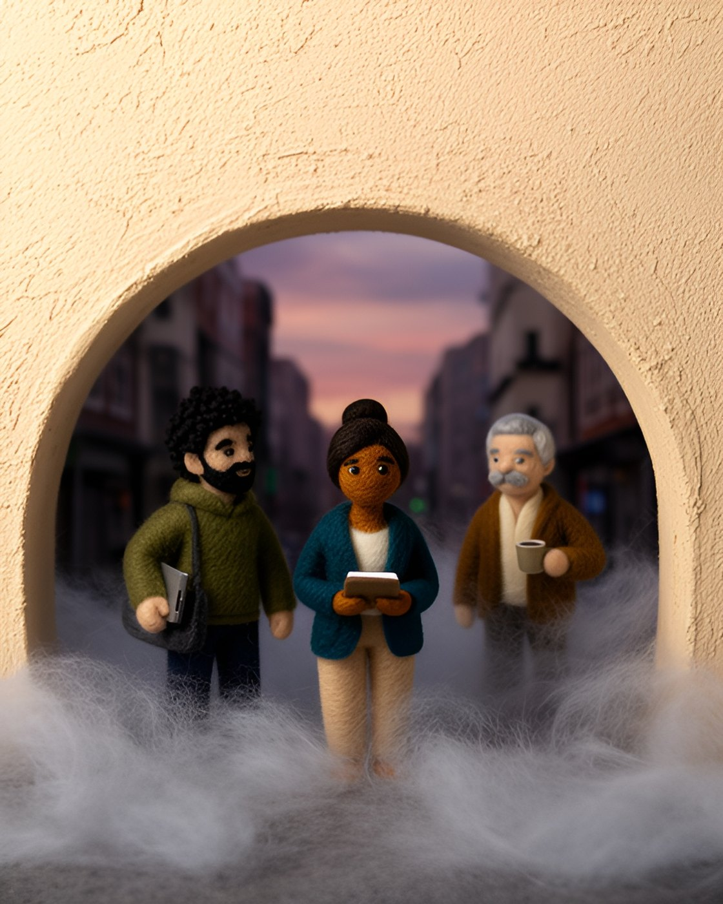
adam.ahmedhaz.com/fog
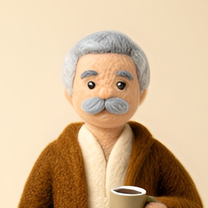
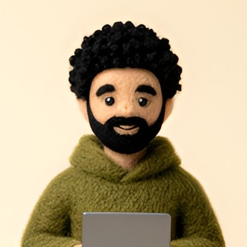
Founder Fog
ضباب المؤسس
A story about Salma, Tariq and Hisham, and the first year of a company.
Written for people starting a company, and for anyone thinking about it.
Pictures: needle-felted art made for this book. Fonts: Manrope and Readex Pro (SIL Open Font Licence).
Ideas and sources follow the Founder Playbook in the game. Not financial or legal advice.
© 2026 adam.ahmedhaz.com
Before you start
Every founder works in a fog. You cannot see the market clearly, the numbers arrive late, and when you are tired the fog gets thicker. This book follows Salma through the first year of a company that helps small shops get paid on time.
Each scene ends with a box called The fog lifts: one idea, in plain words, with where it comes from. At the end of each chapter there is a page of tools to use in your own company this week.
The story comes from Founder Fog, a free game where you run a startup week by week. Play a chapter, then play the year.
Contents
- Chapter 1: The jump4
- Chapter 2: Looking for fit10
- Chapter 3: The angel16
- Chapter 4: The big customer22
- Chapter 5: Four days without sleep28
- Chapter 6: The clock34
- Chapter 7: The rival40
- Chapter 8: Ramadan46
- Chapter 9: The first salesperson52
- Chapter 10: The licence and the family58
- Chapter 11: The pivot64
- Chapter 12: A year later70
The jump
Every company starts before it has a name: with a person, a problem that will not let go, and a sum on the back of an envelope.
The fog isn't out there in the market. Most of it is in your own head.Hisham
In this chapter
- Personal runway
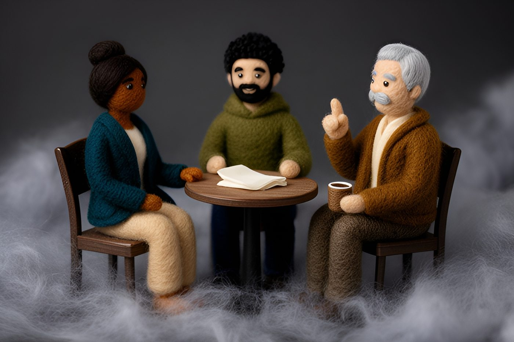
Vesting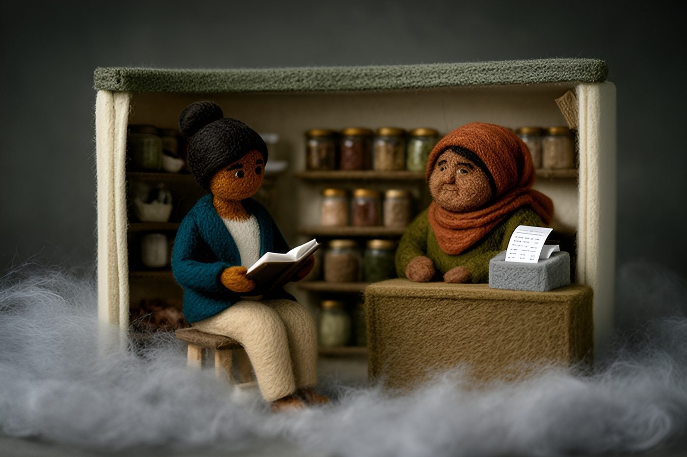
The Mom Test- Clarity
12 months
For six years Salma managed products at a bank in Cairo. Every month she watched small shops wait weeks to get paid, and borrow to cover the gap. Before she handed in her notice, she did one sum. Savings: $18,000. Rent, food and bills: $1,500 a month. That gave her 12 months, if nothing went wrong. Hisham, who had sold his first company, called it her personal runway. “Write it on the wall,” he said. “Not to scare you. So you always know.”
Savings divided by what you need to live each month. It is the clock that starts the day you quit, and founders who know it make calmer decisions.
Half and half on a napkin
Tariq had built two apps nobody used, and he wanted this one to be different. In a café near Tahrir they drew a line down a paper napkin. Half for Salma, half for Tariq. “Deal?” said Tariq. Hisham put down his coffee. “Imagine it is month 8, and one of you wants to leave. Who keeps the half?” Nobody spoke. That night they agreed on vesting: shares earned over 4 years, and nothing until the end of year one. It felt unromantic. It was the kindest thing they did all year.
Founder shares are earned over time, usually 4 years with a 1-year cliff. It protects whoever stays, and investors will ask for it anyway.
Brad Feld and Jason Mendelson, Venture DealsDon't build yet
Tariq wanted to start coding on Monday. Hisham asked for 20 conversations first, with one rule: never ask if they like the idea. So Salma sat on a stool in Umm Hany's grocery shop and asked about last month instead. How many customers paid later? How long did she wait? What did she do while she waited? Umm Hany pulled out a shoebox of paper receipts. “40 days, sometimes,” she said. “I borrow from my brother.” Nobody said the word app. Salma filled 6 pages.
Ask about what people did, not about your idea. Opinions are polite. What they did last month is data.
Rob Fitzpatrick, The Mom Test (2013)The first fog
3 weeks in, Salma was sleeping 5 hours a night. Her notes stopped making sense. She read the same email 4 times and answered the wrong question. Hisham called at midnight and heard it in her voice. “In my first company I thought being tired proved I cared,” he said. “It was just the fog. It hides the numbers first, then the people.” She closed the laptop. The next day she slept 8 hours, walked by the Nile, and found the mistake in her spreadsheet in 10 minutes.
The founder is the company's first resource. Sleep, exercise and one evening off a week are how good decisions keep coming.
Michael A. Freeman et al., Are Entrepreneurs Touched with Fire? (2015)Tools for week 0
1. Personal runway
2. The co-founder talk: five questions for this month
- Who decides what, and who breaks a tie?
- How is the equity split, and does it vest?
- What happens if one of us leaves?
- How much does each of us need to live on?
- How do we disagree without breaking up?
3. Twenty conversations, before any code
One circle per conversation about what someone did last month.
Looking for fit
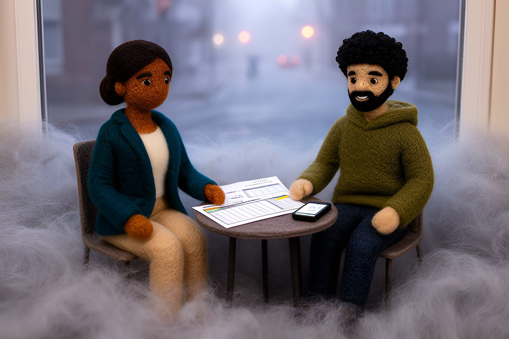
An idea is a guess. The first weeks of a company are about finding out, as cheaply as possible, which part of the guess is wrong.
Don't fall in love with the app. Fall in love with Umm Hany's shoebox.Hisham
In this chapter
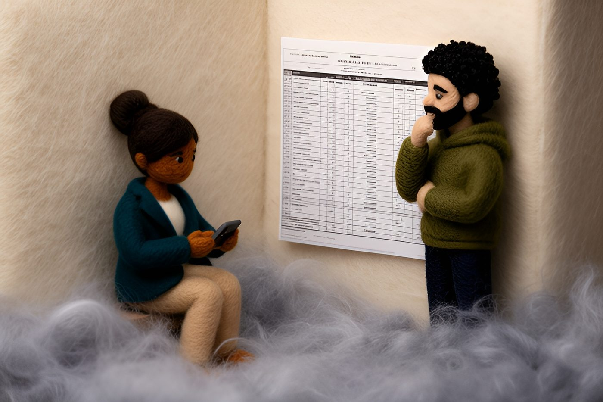
Run small experiments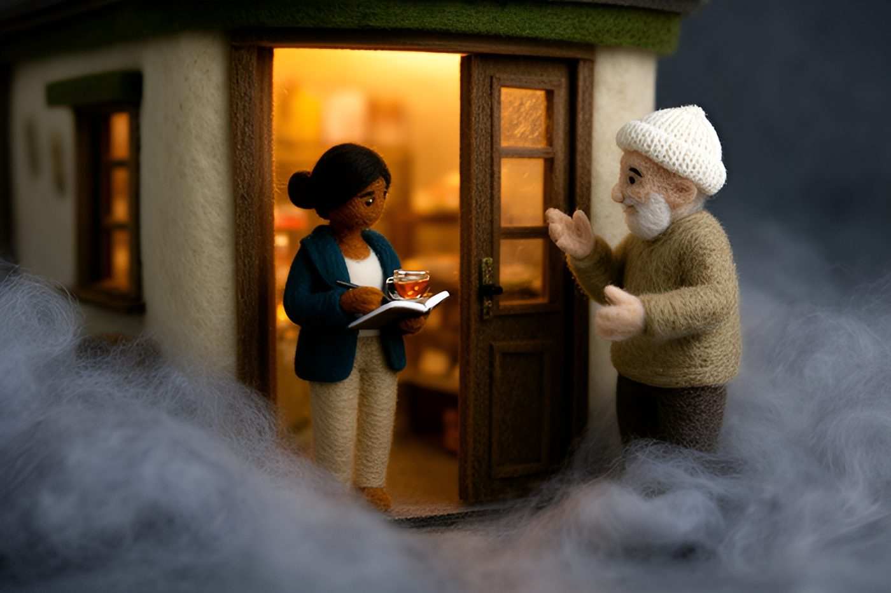
Do things that don't scale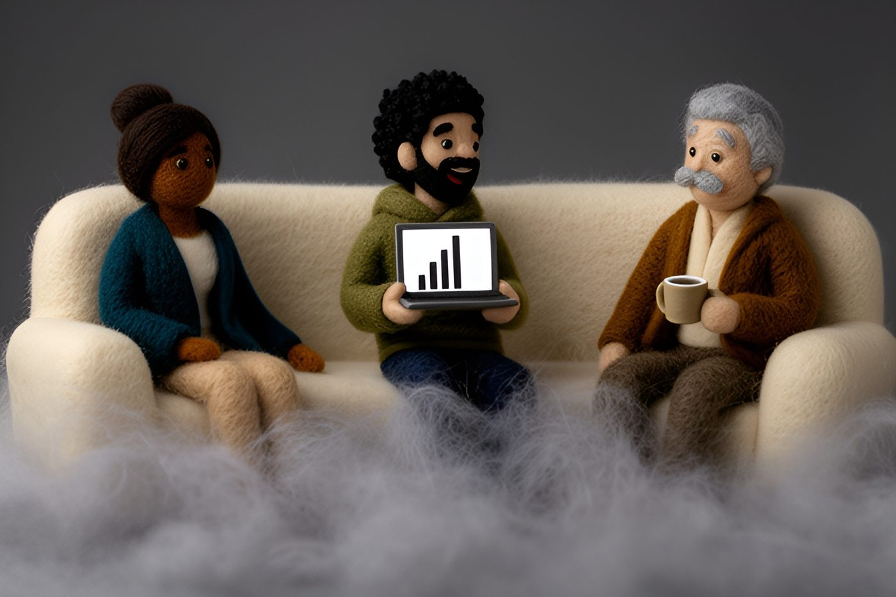
Vanity metrics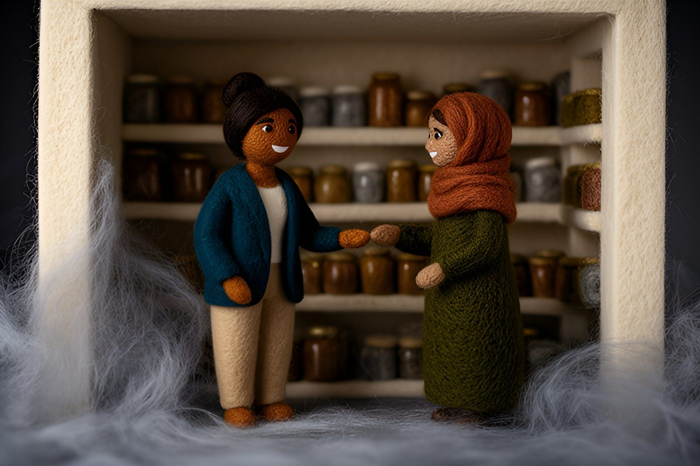
Product-market fit
A spreadsheet and a phone
Tariq wanted 3 months to build the app. Hisham gave them one week and no code. So they made a spreadsheet of what 10 shops were owed, and Salma sent every payment reminder by hand from her own phone, politely, with the amount and the date. Umm Hany was paid in 12 days instead of 40. Nobody had seen an app. Tariq looked at the spreadsheet for a long time. “So this is the product,” he said. “For now,” said Hisham.
Build the smallest thing that can prove you wrong, measure what people actually do, and learn. What matters is how fast each loop goes.
Eric Ries, The Lean Startup (2011)7 in the morning
Shops open early, so Salma did too. Every new shop got a visit at 7 in the morning, a cup of tea, and 20 minutes of her time. She set up their list herself and wrote down every question they asked. By the end of the month her notebook held 63 questions. The same 5 came up again and again. Tariq built answers to those 5, and nothing else.
Win the first users by hand, one at a time. It doesn't scale, and that is the point: you learn what they need before you automate it.
Paul Graham, Do Things That Don't Scale (2013)500 sign-ups
Tariq posted a short video online, and by morning 500 shops had signed up. He took a screenshot of the number and sent it to everyone he knew. Hisham asked a different question. “How many used it twice?” Salma checked. 9. The other 491 had looked once and left. “500 is a nice number,” said Hisham. “9 is the one that tells you what to do.”
Total sign-ups and downloads only go up and feel good. Watch the numbers that change what you do next, like people who come back.
Eric Ries, The Lean Startup (2011)Very disappointed
In week 6 Salma asked the 25 shops that used Daftar every week one question: how would you feel if you could no longer use it? 11 said very disappointed. That is 44%. Umm Hany said it louder than anyone. “Don't you dare,” she said, and laughed. Hisham nodded slowly. “Above 40% is a sign. Not a promise. A sign.” For the first time, the fog moved a little.
Ask users how they would feel without your product. If 40% or more say very disappointed, you may be close to fit.
Sean Ellis's 40% testTools for week 2
1. Our riskiest guess
2. The smallest test this week, and the result that would change our mind
3. The 40% question
The angel
The first money from outside always feels like a gift. It is a trade, and it is worth reading every line of it.
Valuation is the number everyone talks about. Control is the one that hurts later.Hisham
In this chapter
- Dilution
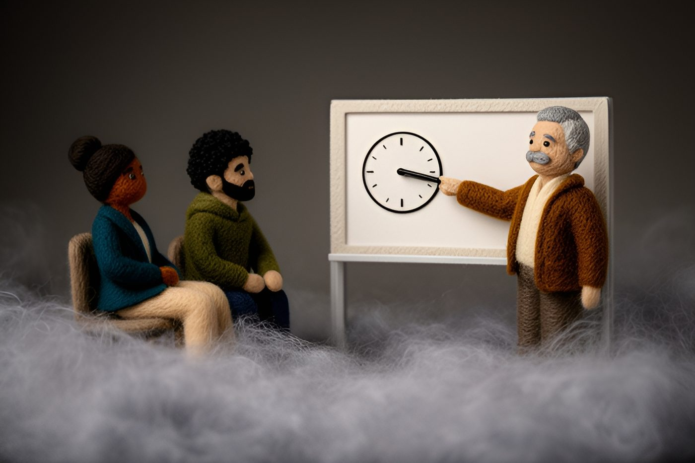
When to raise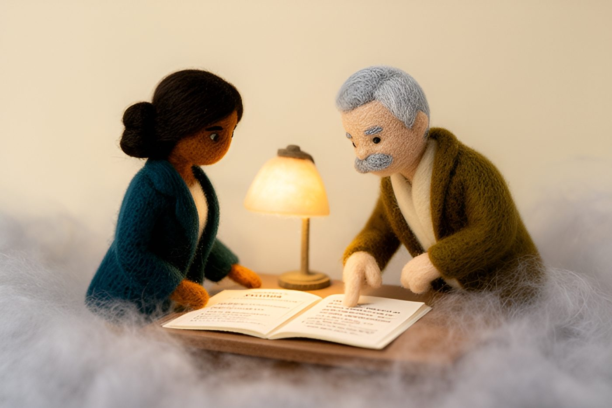
Reading a term sheet- Investor updates
$50,000 for 20%
Layla Fahmy had run a bank's small business desk for 20 years. She had heard about Daftar from Umm Hany's brother, of all people. Over coffee she made an offer: $50,000 for 20% of the company. Tariq did the sum on a napkin. That meant the whole company was worth $250,000 after her money. Last month it had been worth nothing. Salma didn't say yes. She said, “Can we think about it for a week?”
Every round sells part of the company. Dilution is fine when the company grows faster than your share shrinks.
Brad Feld and Jason Mendelson, Venture DealsWhy now?
“Shouldn't we wait until we're bigger?” asked Tariq. “Then we'd get a better price.” Hisham shook his head. “Raise when you have something moving and months left. Not when you're desperate.” They had 44% of shops saying very disappointed, and Salma still had 9 months of savings. A round usually takes months to close. If they waited until the money ran low, they would be negotiating from fear.
Raise with momentum and at least 6 months of runway. A round takes 3 to 6 months, so the real deadline is earlier than it looks.
Paul Graham, How to Raise Money (2013)The small print
The term sheet was 3 pages. The price was on page 1. On page 3, in small letters, Layla would have a veto on every hire and on any spending above $2,000. Hisham put his finger on it. “This one is not about money. It is about who runs the company.” Salma called Layla and asked, plainly, to drop it. Layla smiled. “I wanted to see if you'd read it.” The veto went. The price stayed.
A term sheet has economics (valuation, preference) and control (board seats, vetoes). Founders fixate on the price and sign away control.
Brad Feld and Jason Mendelson, Venture DealsThe first update
On the first day of every month, Salma sent Layla one short email. 4 parts: the numbers, the wins, the problems, and one thing she needed. The first problem she wrote about was embarrassing: 3 shops had left because reminders went out on the wrong day. Layla replied in an hour. She didn't scold. She introduced them to a wholesaler called Omar Sabry, who sold to 300 shops on credit.
A short monthly update: numbers, wins, problems and a specific ask. Investors who hear bad news early tend to help.
Brad Feld and Jason Mendelson, Venture DealsTools for week 5
1. What share are we selling?
2. Term sheet: mark every line that lets someone else say no
- Valuation and option pool
- Liquidation preference
- Board seats
- Vetoes on hiring, spending or new rounds
3. This month's update
- The numbers
- The wins
- The problems
- One specific ask
The big customer
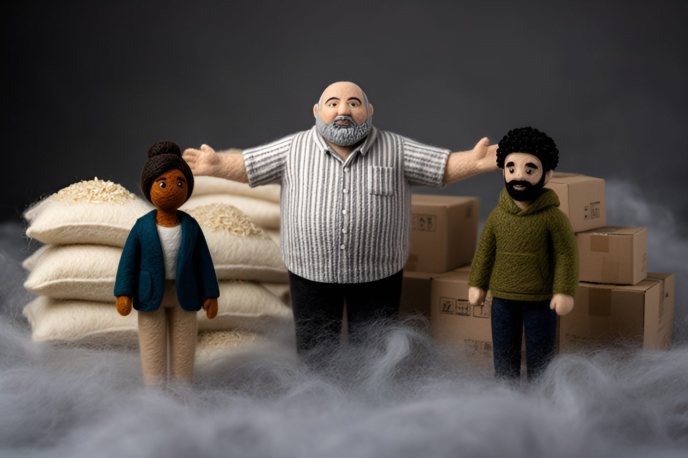
A big customer can make your year. It can also quietly take over your roadmap.
Every yes to one customer is a no to all the others. Say it with your eyes open.Hisham
In this chapter
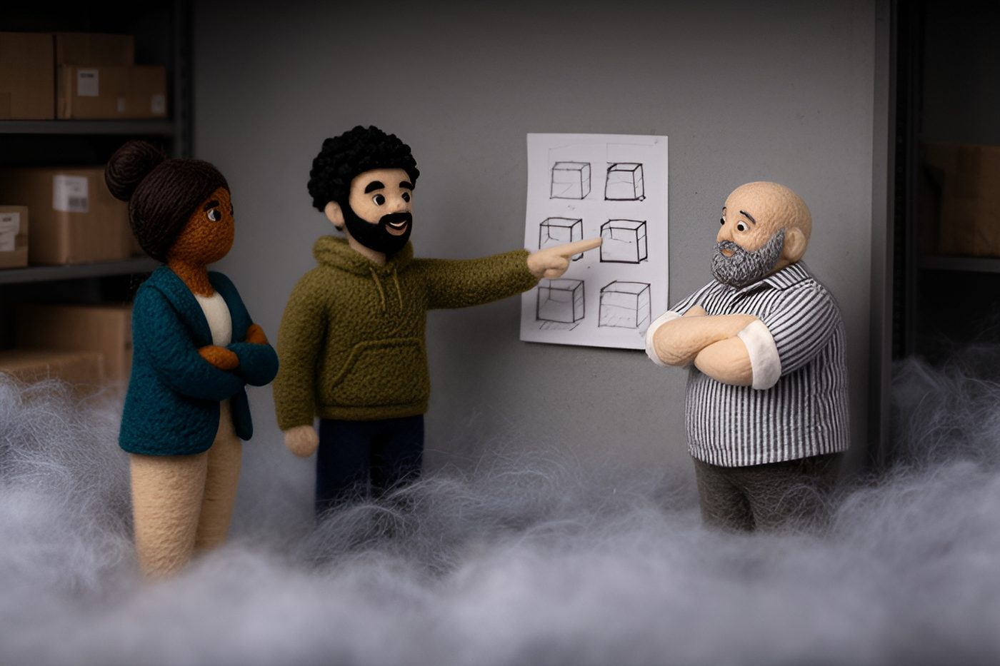
Custom work for one customer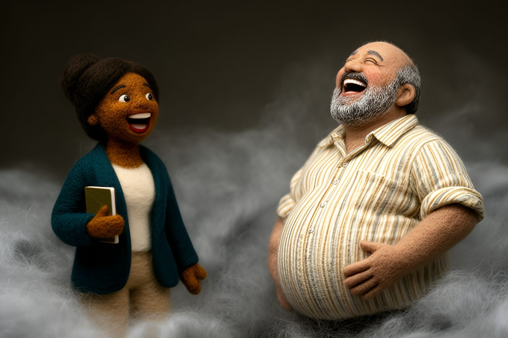
Pricing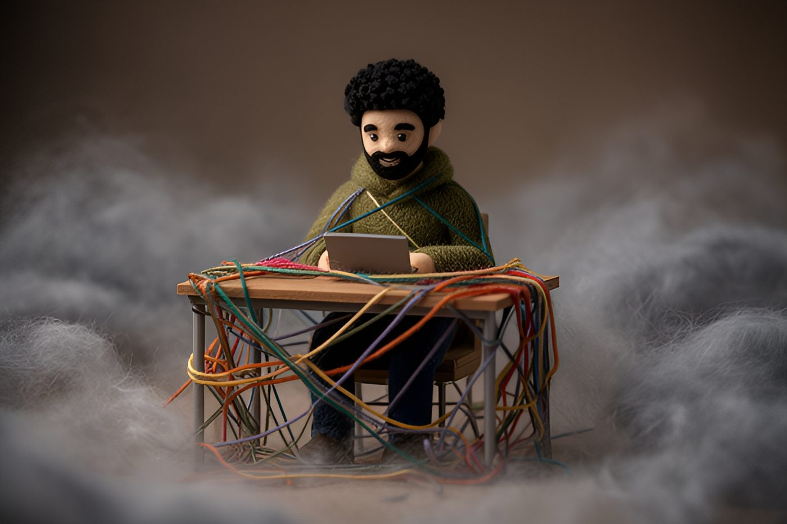
Tech debt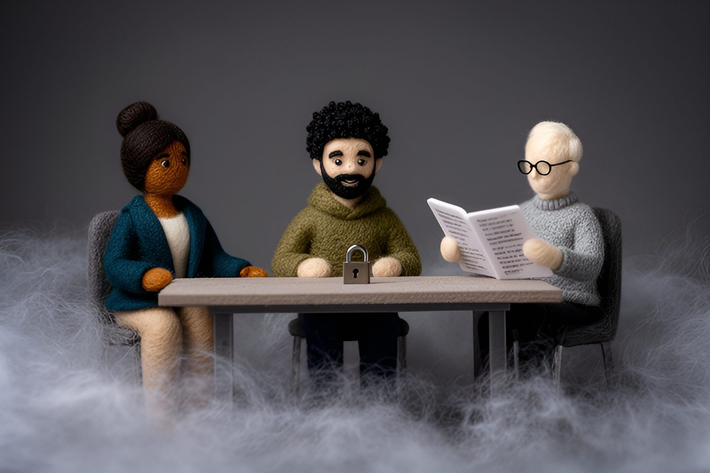
Security is a feature
Just one feature
Omar Sabry's warehouse smelled of rice and cardboard. He liked Daftar. He would put all 300 of his shops on it, but only if they first built a special screen for him: credit limits per shop, his colours, his reports. A month of work for both founders. Tariq's eyes lit up. Salma asked, “Would any other customer use this screen?” Nobody could name one. They said no to the custom screen, and offered the product they had.
A big customer's custom request is a gift and a trap. It brings money now, and puts their name on your roadmap.
Marty Cagan, Inspired$5 is too cheap
Before he walked them out, Omar asked the price. “$5 a month per shop,” said Salma. He laughed. “My shops lose more than that in a day of chasing.” That night they tried something frightening. The next 10 shops were quoted $8. 9 said yes. Nobody had pushed back on $5 because $5 was too low. The 3 extra dollars, times every shop, went almost straight to profit.
Most founders underprice because they fear hearing no. If nobody ever pushes back on your price, it is too low.
Madhavan Ramanujam and Georg Tacke, Monetizing Innovation (2016)Fast and messy
To move fast, Tariq had taken shortcuts everywhere. Now every small change broke 2 other things. A new reminder time took a week instead of an afternoon. “It's like we borrowed time,” Tariq said, “and now we're paying interest.” They made a rule: every Thursday afternoon, no new features. Only cleaning up. The first Thursday felt wasted. By the fourth, changes were fast again.
Shipping fast is borrowing. Messy code charges interest on every future change. Some debt is smart, if you pay it back on purpose.
Ward Cunningham, The WyCash Portfolio Management System (1992)What if it leaks?
6 weeks later Omar called back. He would try the normal product with 40 shops. But his IT manager had one question first: where is the shops' data, and who can see it? They had no good answer. Names, phone numbers and debts, for real families. They spent 2 weeks on it: backups, access only for those who need it, and a short page explaining it all in plain words. Omar's manager read it twice and signed.
Startups treat security as a later problem, until one leak ends a contract. Customers buy trust before they buy features.
IBM, Cost of a Data Breach ReportTools for week 7
1. Before saying yes to custom work
- Would 3 other customers use it?
- Who looks after it a year from now?
- What do we stop doing to build it?
- Does the price cover all of that?
2. A price test for the next 10 customers
3. Our 3 worst shortcuts, to clean up on Thursdays
Four days without sleep
Companies rarely die from one bad decision. More often the founders run out of patience with each other, or with themselves.
A co-founder is a marriage with a spreadsheet. Talk before you need to.Hisham
In this chapter
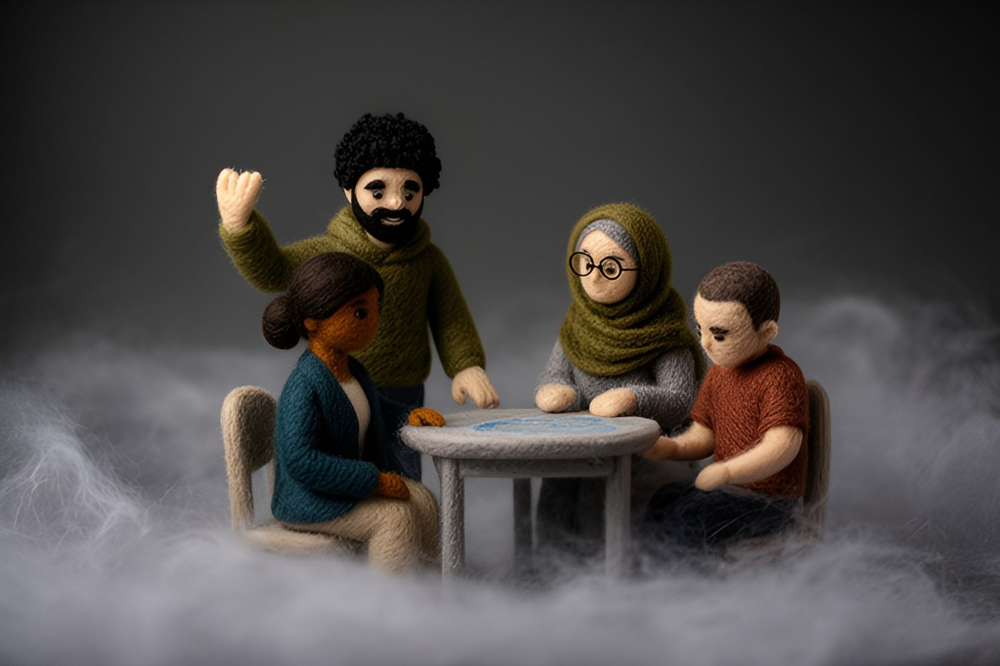
Burnout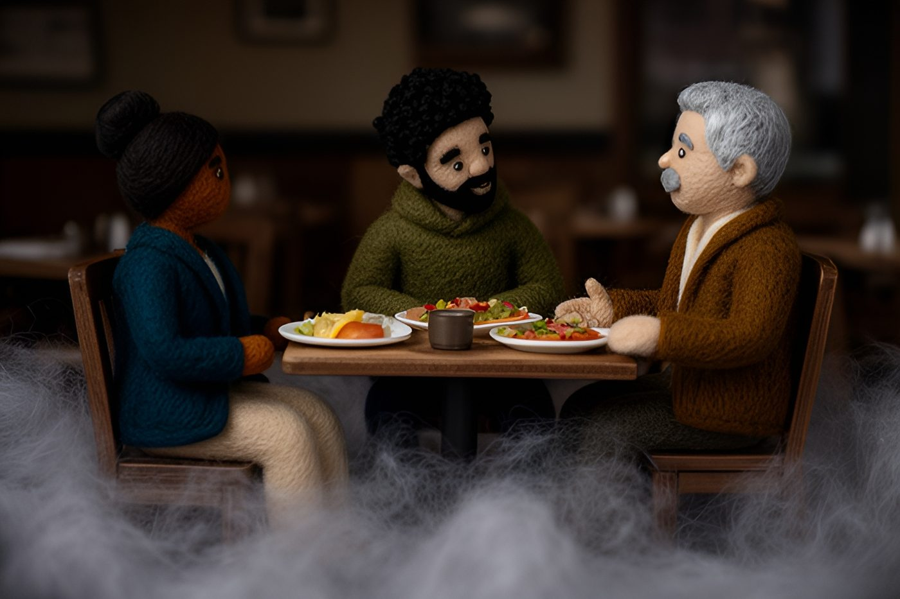
The co-founder relationship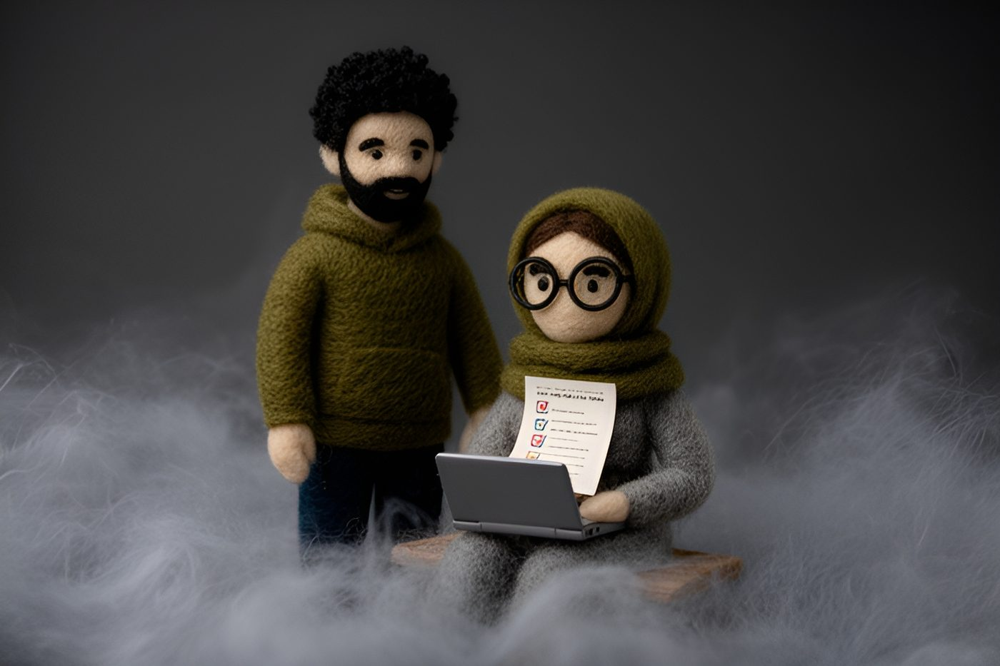
Delegate outcomes, not tasks- Tell the team the truth
3 in the morning
A release went wrong on Sunday, and Tariq stayed up to fix it. And Monday. And Tuesday. By Wednesday he hadn't really slept in 4 days. In the team meeting he snapped at Salma over a button colour. Everyone looked at the table. Afterwards he sat on the stairs with his head in his hands. “I'm fine,” he said, before she could ask. He was not fine. He was in the fog, and he could not see it.
Burnout is a slow leak, not a single crash: short nights, no exercise, every evening at work. A tired founder makes worse decisions and hides it well.
Michael A. Freeman et al., Are Entrepreneurs Touched with Fire? (2015)The talk they skipped
Hisham took them both to lunch and did not let them talk about the product. Who decides what gets built? Salma, after listening to customers. Who decides how? Tariq, always. What happens when they disagree? They sleep on it, then Salma breaks the tie on customers and Tariq on code. It took 2 hours. It should have taken place in week 1. Walking back, Tariq said, “I thought you didn't trust my work.” “I thought you didn't trust my judgement,” said Salma. Both were wrong.
Problems inside the founding team cause about 65% of failures in high-potential startups. Agree early on roles, who decides what, and what happens if someone leaves.
Noam Wasserman, The Founder's Dilemmas (2012)Letting go of the keys
With Layla's money they had hired 2 developers, Mona and Hassan. But every release still went through Tariq, at night. Hisham asked Tariq what he wanted from a release. “No shop gets a wrong reminder,” he said. “Then give Mona that,” said Hisham. “Not the steps. The result.” Mona wrote her own checklist, better than his. Tariq slept 8 hours that Thursday, and nothing broke.
As the team grows, your output is your team's output. Hand over the result you need, and let people own how they get there.
Andy Grove, High Output Management (1983)What the team already knew
On Sunday Salma gathered the 4 of them. She told them what had happened, plainly: the broken release, the bad week, the shouting, and the new rules. Nobody was surprised. Mona said, “We thought it was worse. We thought the money was gone.” Silence had made them imagine something darker than the truth. After the meeting, Hassan asked if he could own the reminders schedule. Of course he could.
When things go wrong, the team usually senses it already. Silence makes them imagine something worse. A founder who tells the truth earns trust.
Ben Horowitz, The Hard Thing About Hard Things (2014)Tools for week 9
1. The weekly co-founder check-in, 30 minutes, no product talk
- What frustrated each of us this week?
- Is anyone carrying too much?
- Any decision we are avoiding?
- How are we sleeping?
2. One result to hand over this month, and to whom
3. Nights with 7 hours of sleep this week
The clock
Every company has a clock: cash divided by burn. Most founders know roughly how much time is left. The ones who last know exactly.
Runway is the only number that tells you how much courage you can afford.Hisham
In this chapter
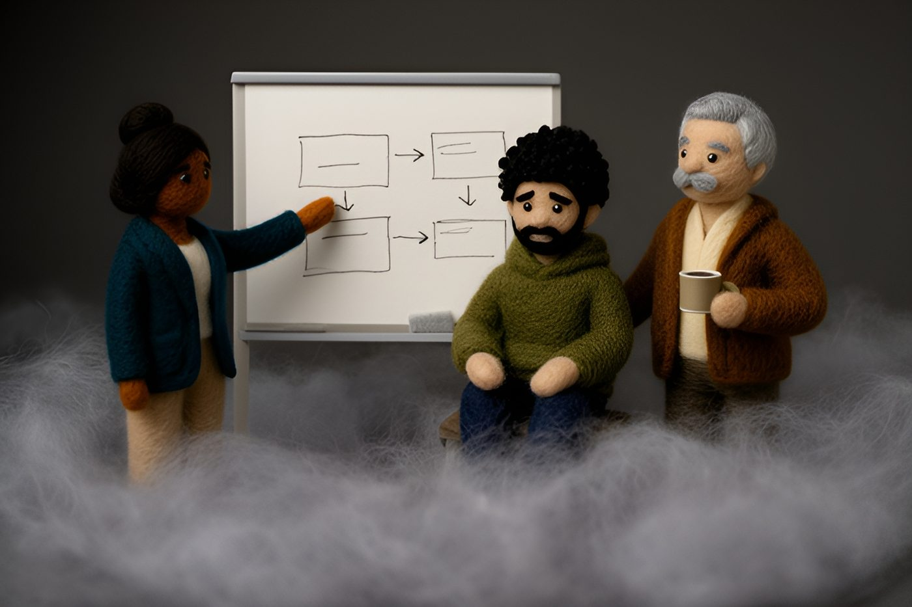
Runway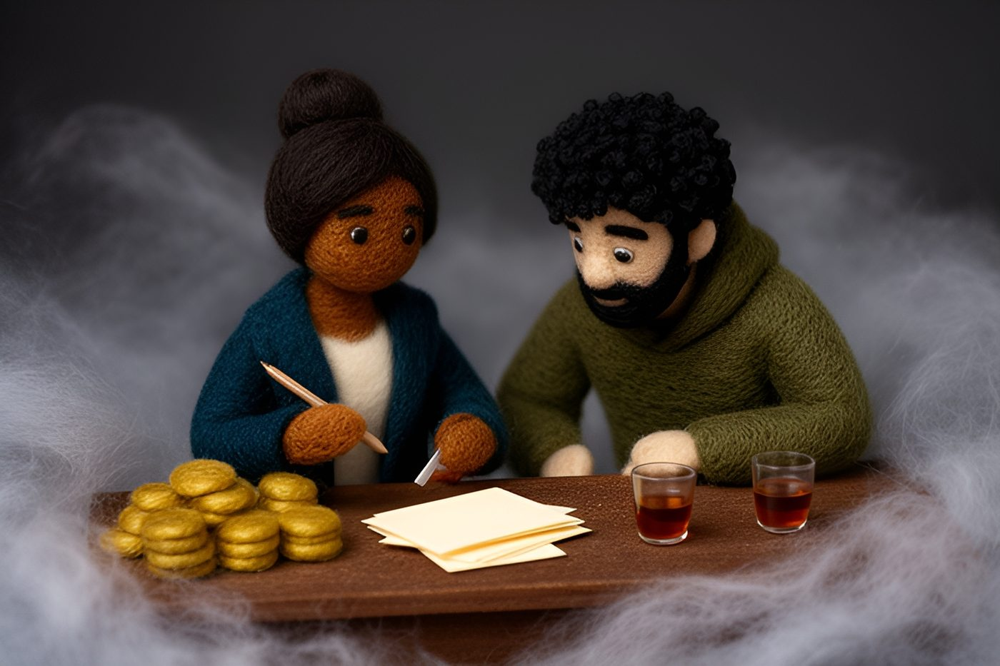
Unit economics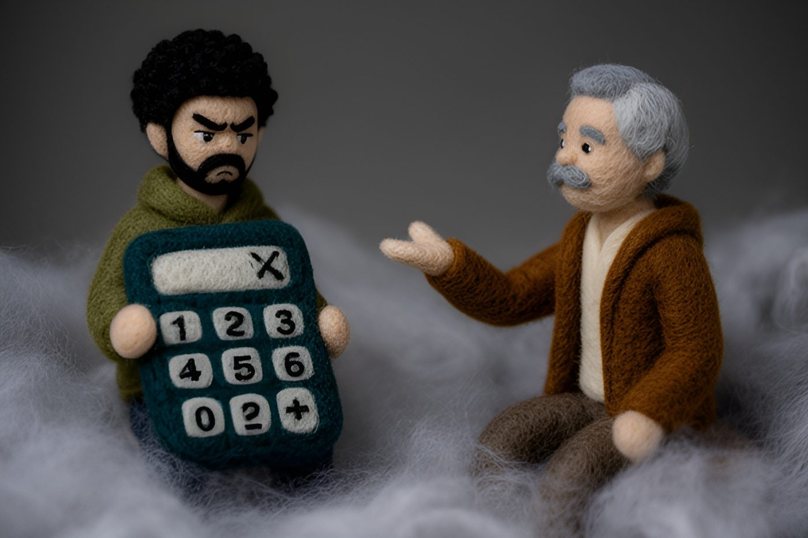
Burn multiple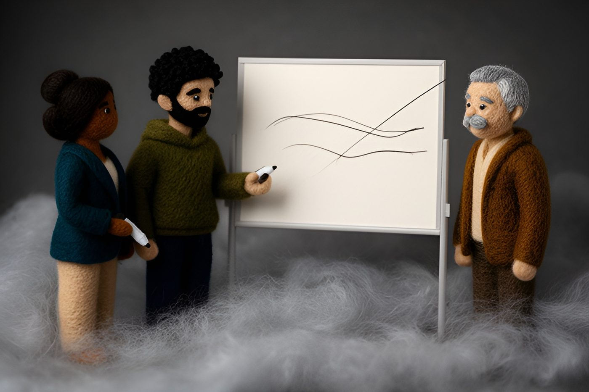
Default alive
8 months
In week 12 Salma put the real numbers on the whiteboard. Cash in the bank: $64,000. What went out each month, after what came in: $8,000. 8 months. Then Hisham asked about the 2 hires they had planned for next quarter. With them, the burn became $12,000, and the clock dropped to just over 5 months. Tariq went quiet. “Always count the plan,” said Hisham. “Not just today.”
Cash divided by net monthly burn. Include planned hires, and remember a round takes months to close, so the real deadline is earlier.
Paul Graham, Startups in 13 Sentences (2009)What a shop is worth
How much did it cost to win one shop? Salma added up her mornings, the printed flyers and the tea: about $40. And what was a shop worth? $8 a month, and shops stayed about 18 months. $144. “So each shop brings back more than 3 times what it costs,” said Tariq. “Good,” said Hisham. “Now check it every month. That number moves when you are not looking.”
Every customer should be worth more than they cost to win. A common rule: lifetime value at least 3 times the cost to acquire.
David Skok, SaaS Metrics 2.0Burning for growth
Last quarter they had burned $24,000. In that time, yearly revenue grew by $9,600. Tariq divided one by the other: 2.5. “Is that good?” Hisham tilted his hand. “Under 1 is excellent. Over 3 is trouble. 2.5 means every new dollar of revenue is expensive.” They looked at where the money went. The online ads had brought sign-ups, not shops. They switched them off the next morning.
Net burn divided by net new yearly revenue. Under 1 is amazing, above 3 is bad. It shows whether growth is being bought at any price.
David Sacks, The Burn Multiple (2020)Two lines
Hisham drew 2 lines on the whiteboard. One was costs, going up slowly. The other was revenue, going up faster. If nothing changed, the lines would cross in month 15. But the money ran out in month 8. “Right now you are default dead,” he said, calmly. “That's not a verdict. It's a to-do list.” Salma wrote 3 things under the lines: raise prices, cut the ads, and get Omar's 40 shops live.
If costs and revenue growth stay as they are, do you reach profit before the money runs out? If not, you need a plan, not hope.
Paul Graham, Default Alive or Default Dead? (2015)Tools for week 12
1. Company runway, with next quarter's hires
2. Unit economics
3. Burn multiple, last quarter
The rival
Sooner or later someone else sees the same problem, with more money. What you do in the next month matters more than what they announced.
Their money is their problem. Your customers are yours.Hisham
In this chapter
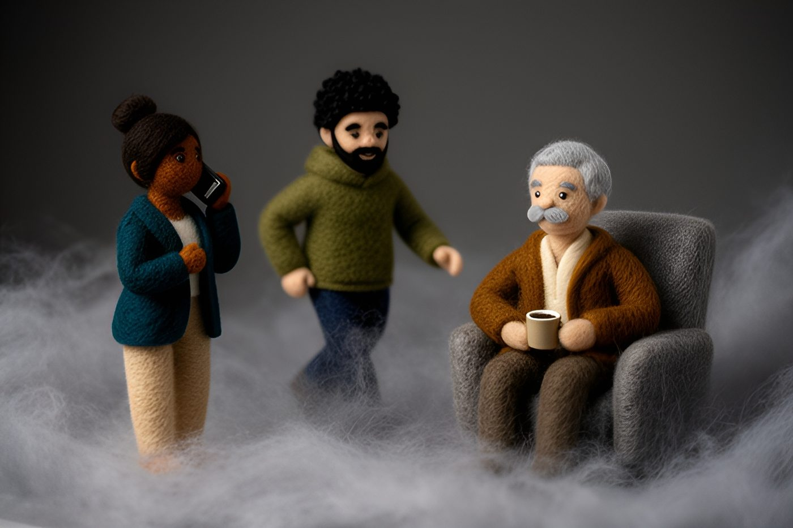
Funding without VCs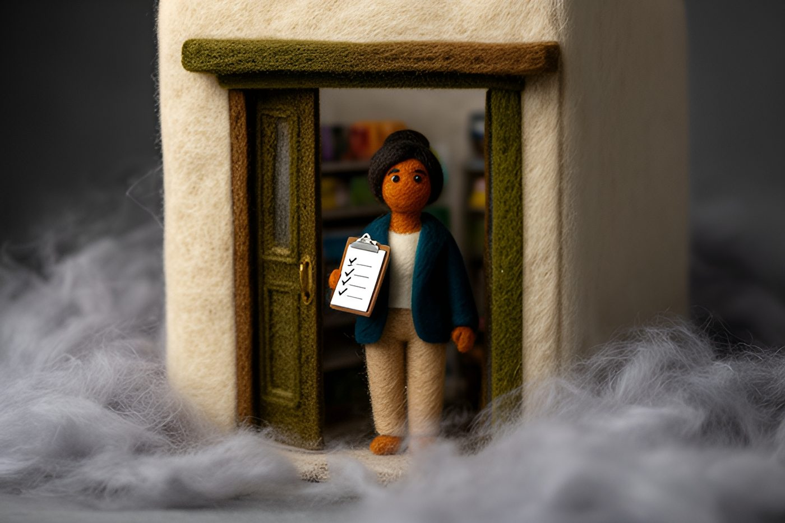
Churn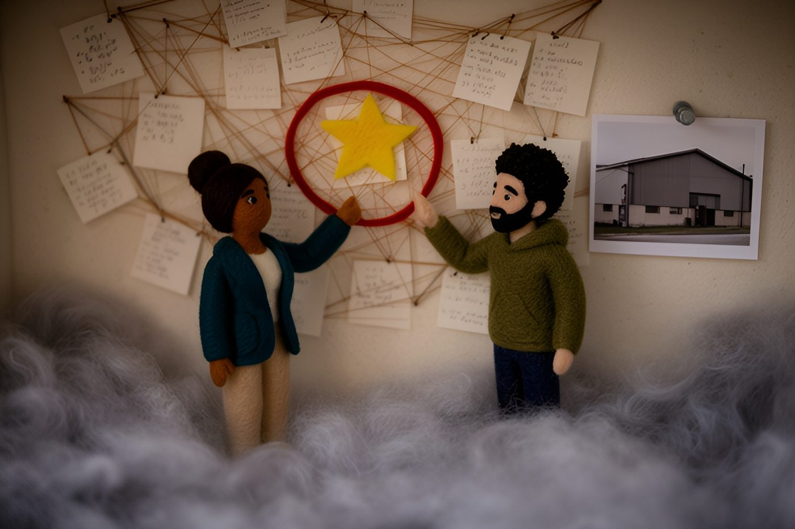
Find one channel that works- Ethics under pressure
$5 million
The news came on a Tuesday: a rival had raised $5 million to do what Daftar did. Tariq read it 3 times. Salma's phone started ringing with people asking if they were finished. Hisham was calm. “Most good businesses never take that kind of money. Your shops pay you every month. That is funding too.” They had 140 paying shops. The rival had a press release.
Venture capital suits companies that can grow 10 times in a few years. Many good businesses can't, and grow on customer revenue instead.
Jason Fried and David Heinemeier Hansson, Rework (2010)Free for 6 months
The rival offered shops 6 months free. In 2 weeks, 12 of Daftar's shops left. Salma called every one of them, not to argue, just to ask why. Most said the same thing: free is free. A month later, 7 came back. The rival's reminders went out at night and annoyed their customers. Salma wrote down the lesson anyway. 12 out of 140 in a month was more than 8%. At that pace, half the shops would be gone in a year.
The share of customers who leave each month. 5% a month sounds small, but it means losing about 46% of your customers in a year.
David Skok, SaaS Metrics 2.0The one channel
They listed everything they had tried to find shops: online ads, flyers, a stand at a trade fair, short videos, Salma's early mornings. Then they wrote next to each one how many paying shops it had brought. One line stood out. Omar's 40 shops had come from one conversation with one wholesaler. Wholesalers already had the shops, and the trust. They stopped almost everything else and went to see 5 more wholesalers.
There are many ways to grow, from ads to partnerships, and most startups grow through one main channel. Find it, then put your effort there.
Gabriel Weinberg and Justin Mares, Traction (2014)Just round it up
An investor wanted to see their numbers before a call. “Let's count every shop that ever signed up,” said Tariq, tired. “Everyone does it.” That would be 600, not 140. Salma thought about Umm Hany, who trusted them with her family's money, and about Layla, who read every line. She sent 140, with churn, and a note on the rival. The investor didn't invest. But 2 months later he sent them a wholesaler.
Small exaggerations become habits, and habits become fraud. The pressure is real, and so is the line. Report the number you would defend in a year.
John Carreyrou, Bad Blood (2018)Tools for week 14
1. Monthly churn
2. Channels tried, and paying customers from each
- Ads
- Partners
- Events
- Content
- Direct sales
- Referrals
3. Numbers we will never round up
Ramadan
The region has its own calendar, its own ways to pay, and its own idea of what a good company owes its people.
Your users live in a calendar. Build for theirs, not for a template from somewhere else.Hisham
In this chapter
- Ramadan and the regional calendar
- Managing a crisis
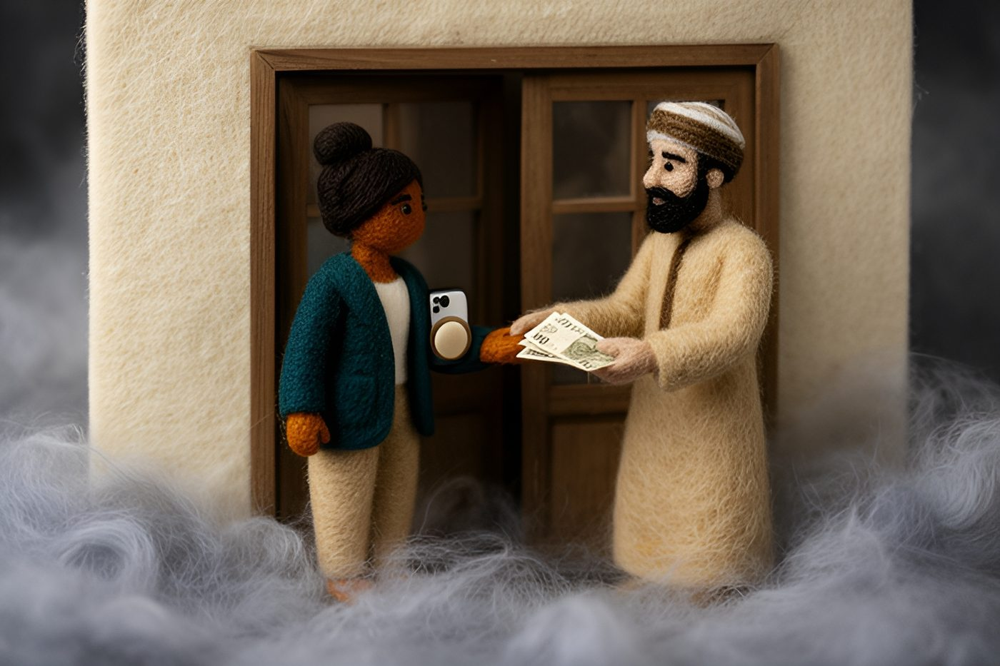
Payments in the region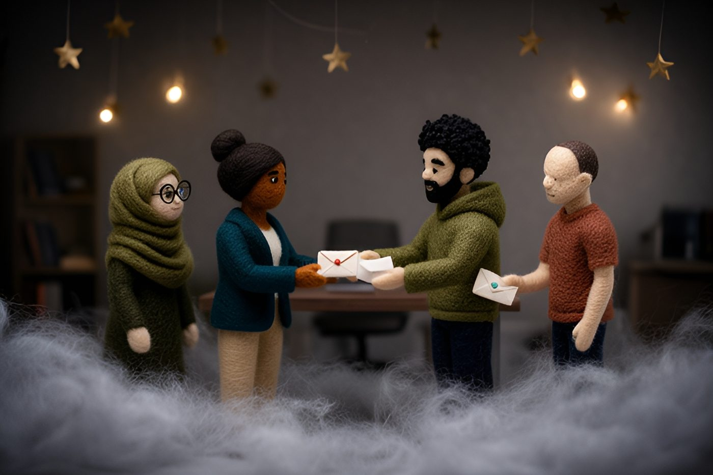
Culture is what you do
After iftar
In Ramadan everything moved. Shops opened late, closed after midnight, and did half their business after iftar. Daftar's reminders still went out at 10 in the morning, when nobody was awake to pay. Hassan moved them to 9 at night. Payments went up by a third. The team changed too: shorter days, no meetings before noon, and a long table for iftar together on Thursdays.
Usage peaks after iftar, B2B slows down, and the team expects time and an Eid bonus. Plan the year around the region's calendar.
Common practice in the regionFrozen
On the 15th night of Ramadan the payment provider froze Daftar's payouts for a review. 3 days, maybe more. Shops were waiting for their money before Eid. Salma did not hide. She called the 20 biggest shops herself, sent every shop a short message every 6 hours, and said exactly what she knew and didn't know. On the fourth day the money moved. Not one shop left. Umm Hany sent a box of sweets.
In a crisis, speed and honesty beat polish. Say what happened, what you are doing, and when the next update comes, then keep that promise.
Ben Horowitz, The Hard Thing About Hard Things (2014)Cash on delivery
Half of what shops were owed would never arrive by card. Their customers paid in cash, at the door, or when the salary came. Tariq had built Daftar for card payments only. So they added the simplest thing: a button to mark a debt as paid in cash, with a photo of the receipt if the shop wanted. It was not elegant. It was how the street actually worked, and usage doubled.
Cash on delivery, late payers and payment providers that freeze funds are normal here. Build for how people really pay.
Common practice in the regionThe Eid bonus
After the freeze, cash was tight, and Eid was coming. The team expected a bonus, as every company in Cairo gave one. Tariq suggested skipping it this year. Salma thought about what the team would remember. They paid half the usual bonus, explained why in a short honest note, and the 2 founders took none. Mona told her mother it was the best company she had worked for.
Culture is not the values on the wall. It is how people behave when nobody is watching, and it is set by what the founders actually do.
Ben Horowitz, What You Do Is Who You Are (2019)Tools for week 21
1. Our year, in the region's calendar
- Ramadan
- Eid al-Fitr
- Eid al-Adha
- Summer holidays
- Back to school
- Year end
2. A crisis message: what happened, what we are doing, when the next update comes
The first salesperson
The first hires shape the company more than any plan. Hire slowly, and be honest quickly when it isn't working.
You can't hire someone to do a job you've never done yourself.Hisham
In this chapter
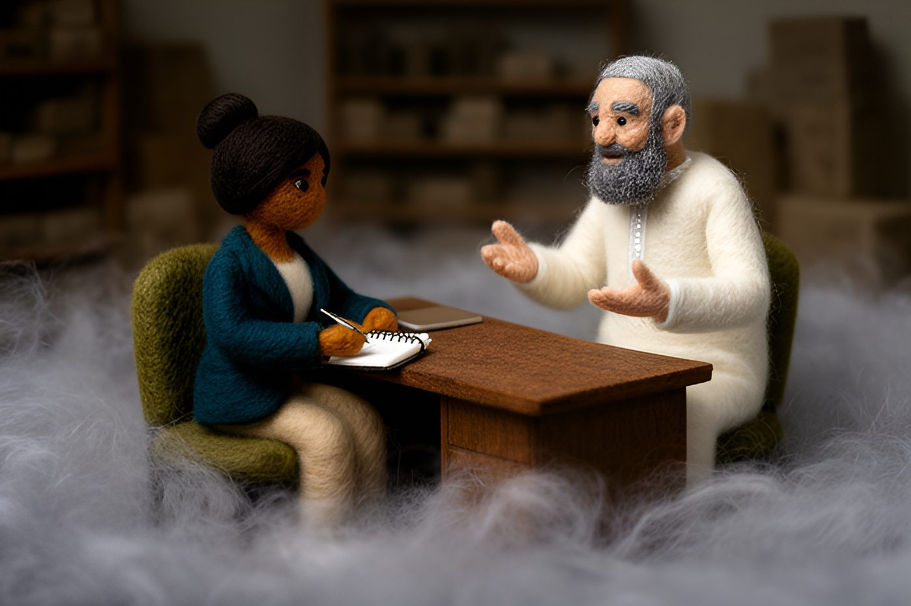
The founder sells first- No brilliant jerks
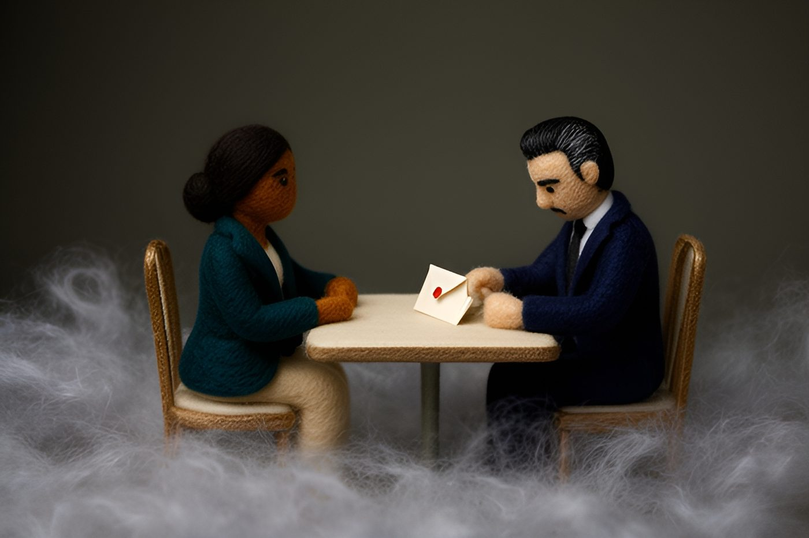
Hire slowly, part ways quickly- Working with a board
Who sells?
Salma was tired of selling. 5 wholesalers had said yes to a meeting, and she wanted someone else to go. Hisham asked her to do the first 5 herself. “Find out what they ask, what makes them say yes, and what makes them hesitate. Write it down. That's the job description.” She went. 3 signed. Her notes became a 1-page script, and only then did they start looking for a salesperson.
Early on, the founders sell. It is how you learn what customers need, and it is the only way to know what a good salesperson looks like.
Paul Graham, Do Things That Don't Scale (2013)Ziad
Ziad had a great handshake and a better slide deck. He booked 6 meetings in his first week, and the dashboard filled with deals. In week 4, in front of the team, he called Mona's reminder design “a student project.” Mona stopped talking in meetings. Hassan started looking at other jobs. Ziad was bringing in meetings. He was also emptying the room.
A talented person who belittles others costs more than they deliver: good people stop speaking up, then they leave.
Netflix Culture: Freedom & Responsibility (2009)A pipeline of air
After 8 weeks the dashboard showed $90,000 of deals. Salma called 5 of them. 2 had never heard of Daftar. 3 had said “maybe later.” Nothing had closed. She had known for weeks and kept hoping. On a Sunday morning she told Ziad, kindly and clearly, that it was not working, paid him fairly, and thanked him. Then she told the team why. Mona spoke in the next meeting.
A bad early hire costs far more than a salary: months of lost work and a team that has to compensate. The conversation you postpone gets more expensive.
Ben Horowitz, The Hard Thing About Hard Things (2014)Bad news on page 1
Layla now sat on a small board with Salma and Tariq. Before the first meeting Salma did what Hisham had told her: she sent the papers 3 days early, and put the bad news on page 1. Ziad, the empty pipeline, and what it had cost. Layla read it before the meeting, so the meeting was not a surprise. It was a conversation about what to do next. It took 40 minutes.
Treat the board as a group you lead, not an exam you sit. Send materials 3 days early and put bad news on the first page.
Brad Feld and Mahendra Ramsinghani, Startup Boards (2014)Tools for week 26
1. Before any hire
- A real work sample, not just an interview
- 2 reference calls we found ourselves
- Time with the whole team
- How do they talk about past colleagues?
2. The sales script: what customers ask, and what makes them say yes
3. Page 1 of the next board pack: the bad news
The licence and the family
Some of the hardest parts of the year happen far from the product: in a regulator's office, at a bank, and at the family dinner table.
The rules are slow. Breaking them is slower.Hisham
In this chapter
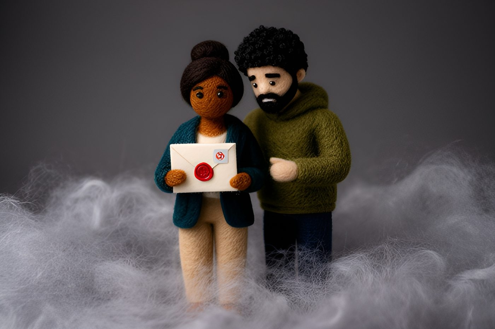
Regulation in the region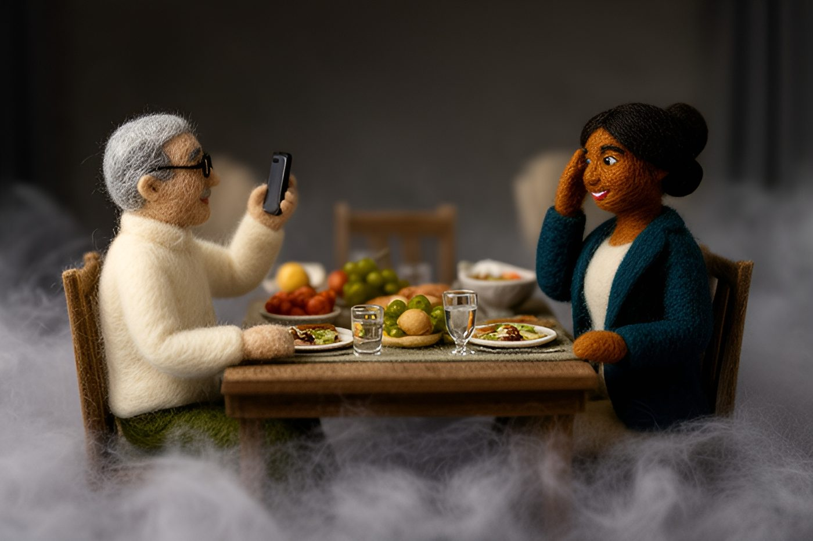
Relationships and wasta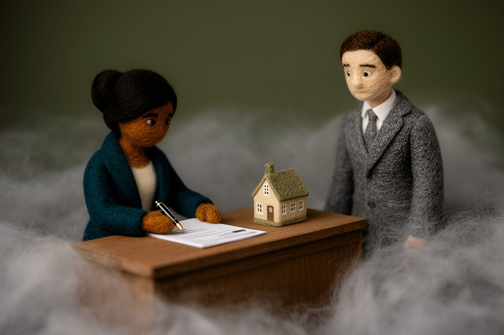
A personal guarantee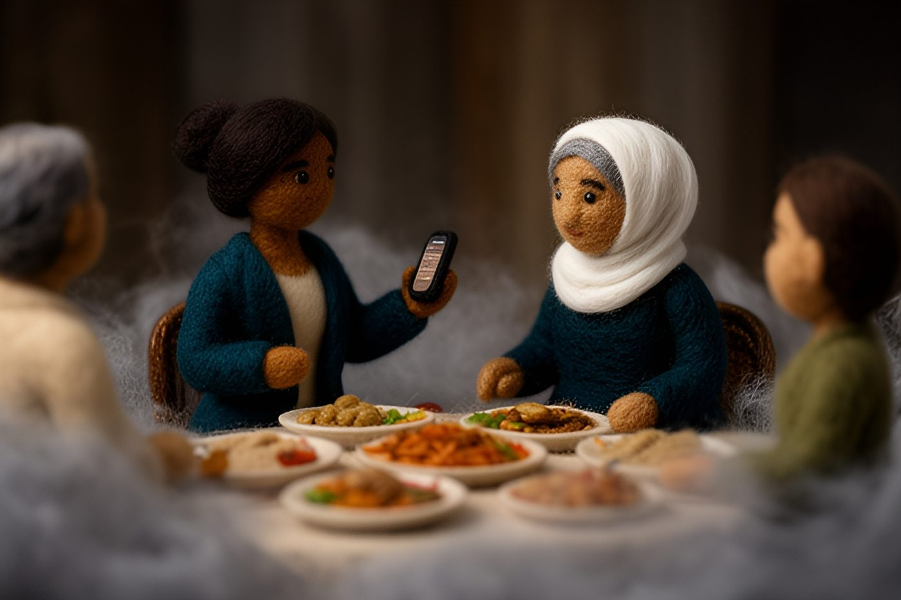
Family and partner
A letter from the regulator
In week 30 a letter arrived. Because Daftar now moved shops' money, it needed permission from the central bank, or a place in its test programme for young companies. The process would take months. Tariq wanted to keep going and deal with it later. Hisham shook his head. “In payments, later is how companies disappear.” They applied to the test programme the next week, and Salma started a folder that grew very thick.
Payments, health and education are regulated. Central-bank test programmes, licences and data rules take months. Start early and plan around them.
Common practice in the regionAn uncle who can make a call
At a family lunch Salma's uncle heard about the folder. “I know someone,” he said. “One call, and it's done in a week.” It was tempting. Hisham's advice was simple: take the introduction, not the favour. Her uncle's friend explained which office handled their file and which papers were missing. Salma did everything the normal way, just with a map. It still took 3 months. Nobody could ever say they had cut a corner.
Relationships open doors here. Use them for introductions and advice, not for skipping the rules. A shortcut can become the risk that ends you.
Common practice in the regionSign here
To hold on until the licence came, the bank offered a $40,000 loan. On the last page, the bank wanted Salma's personal guarantee: if Daftar could not pay, her flat would. She held the pen for a long time. Then she put it down. They took a smaller loan of $15,000, against the company's monthly revenue, with no guarantee, and cut 2 planned hires instead. The flat stayed hers.
A loan must be repaid whatever happens to the company. A personal guarantee puts your home behind it. Know exactly what you are signing.
A real job
In week 38, at Friday dinner, Salma's mother finally asked. “When will you get a real job? Your cousin just got promoted at the bank.” The table went quiet. Salma did not argue. She took out her phone and showed her mother the runway, the shops, and Umm Hany's message. Then she promised one thing: Friday evenings would stay family time, no laptop. Her mother did not understand the numbers. She understood the promise.
The people at home carry part of the risk. Tell them the real numbers, and protect a little time that belongs only to them.
Brad Feld and Amy Batchelor, Startup Life (2013)Tools for week 30
1. Before signing any loan
- Is there a personal guarantee? On what?
- What happens if we miss 2 payments?
- Could we cut costs instead?
- Has a lawyer read it?
2. Which rules and licences apply to our business?
3. Who at home should know our runway, and which evening is theirs?
The pivot
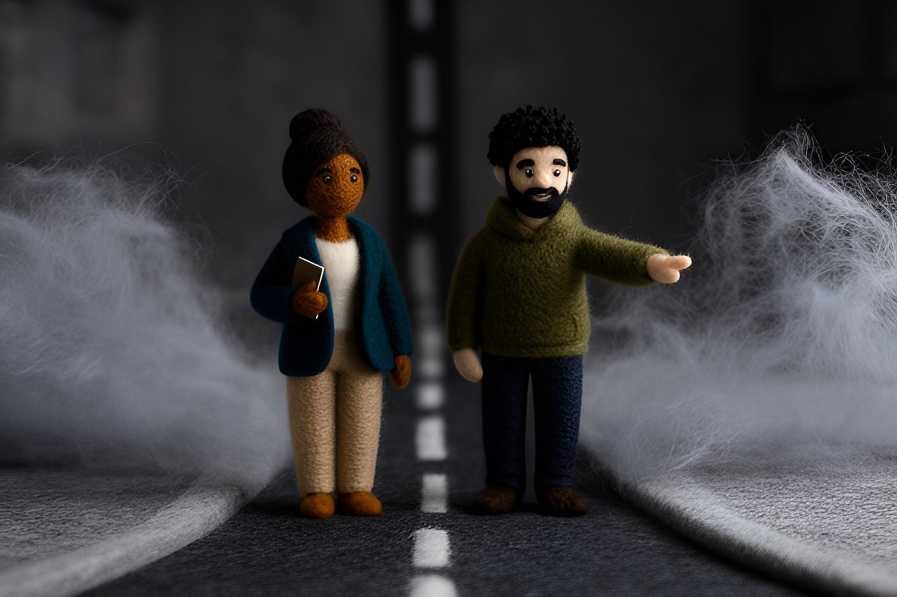
Sometimes the data points somewhere you did not plan to go. The hard part is not seeing it. It is saying it out loud.
A pivot is not starting over. It is turning, with everything you learned in the car.Hisham
In this chapter
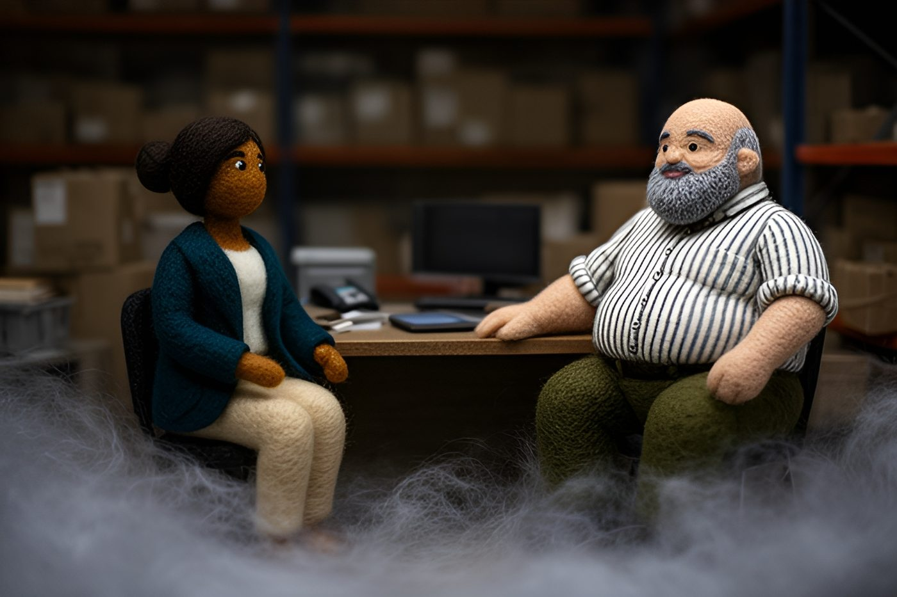
Cash is not profit- Pivot or persevere
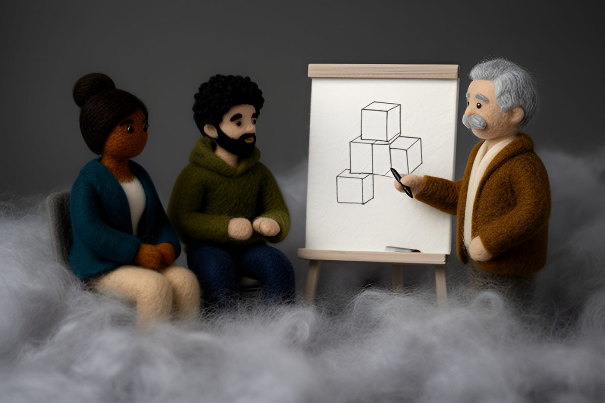
Liquidation preference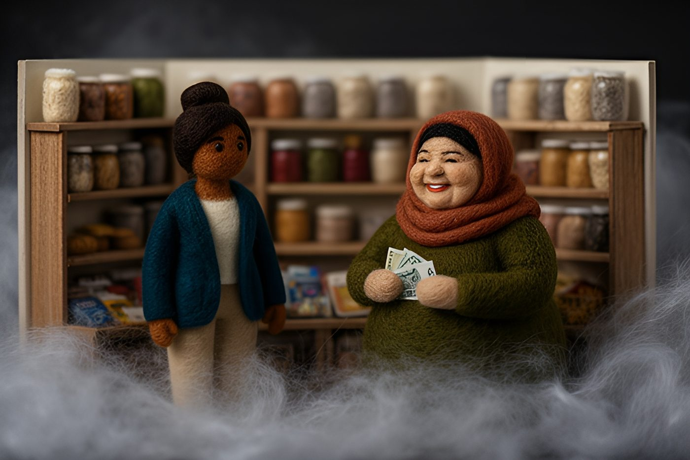
Say the plan in one sentence
90 days
By week 44 Omar's company owed Daftar $12,000, and it was 90 days late. On paper, Daftar had its best quarter ever. In the bank, there was almost nothing. Salma finally understood Umm Hany's shoebox from the inside. “We're profitable and broke,” said Tariq. Hisham nodded. “Profit is an opinion. Cash is a fact.” Salma drove to Omar's warehouse with a printed statement and a cup of his favourite coffee.
A sale you have not been paid for is a promise, not money. Watch how long customers take to pay, and chase it as hard as you sell.
The feature nobody asked for
Months ago Tariq had added a small button: get paid early. Daftar would pay a shop what it was owed today, for a 2% fee, and collect later. Almost nobody used it. Then Mona looked at the data. The 30 shops that did use it grew 3 times faster, and none of them had left. Shops did not mainly want reminders. They wanted their money now. The fog in front of the company thinned, all at once.
A pivot changes one part of the plan, such as the customer, the problem or the product, while keeping what you have learned.
Eric Ries, The Lean Startup (2011)2x
To pay shops early they needed money to lend, and investors were interested now. One offer came with a beautiful valuation and one small line: a 2x participating preference. Hisham modelled it on the whiteboard. If Daftar sold one day for $3 million, that investor would take back twice their money first, and then a share of the rest. The founders would get far less than the valuation suggested. They took a lower valuation with a clean 1x preference.
It decides who gets paid first when the company is sold. Model your share at a low, medium and high sale price before you sign.
Brad Feld and Jason Mendelson, Venture DealsOne sentence
Before telling anyone, Salma made them write the new plan in one sentence. It took 2 evenings. “Daftar pays small shops today for what their customers owe them, and collects it kindly later.” They told the team first, then Layla, then Omar, then Umm Hany. Each one understood it in one hearing. Umm Hany asked only one question: “Can I have mine on Thursdays?”
If the plan doesn't fit in one sentence, the team will each carry a different version of it. Write it, then say it the same way to everyone.
Tools for week 44
1. Months of revenue waiting to be paid
2. What do our best customers do that the others don't?
3. Our plan in one sentence
A year later
The fog never fully lifts. A year in, the difference is not that you can see everything. It is that you know how to look.
You don't beat the fog. You learn to read it.Hisham
In this chapter
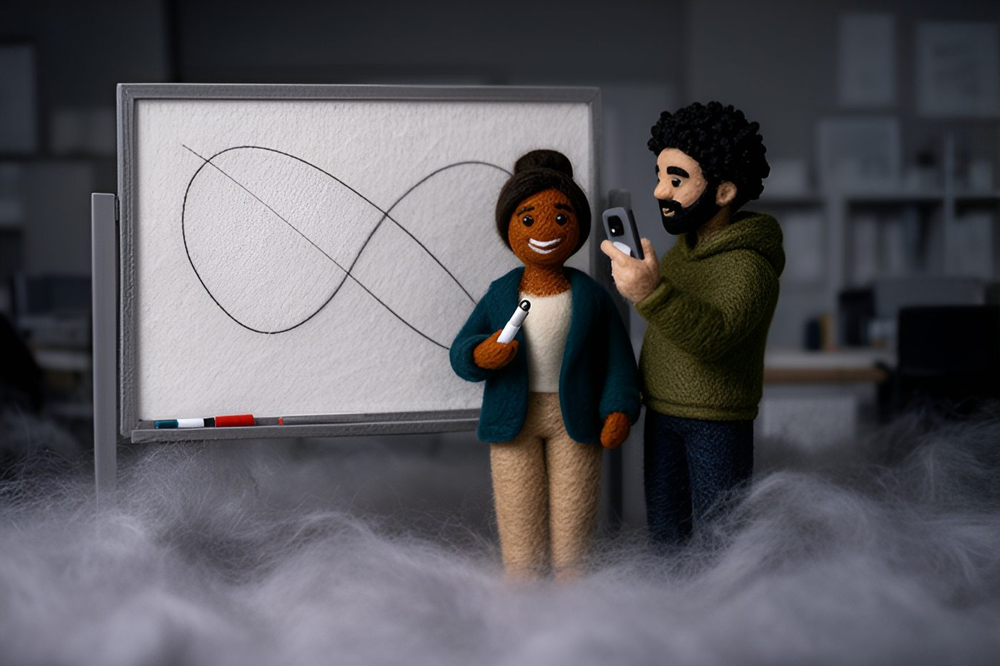
Default alive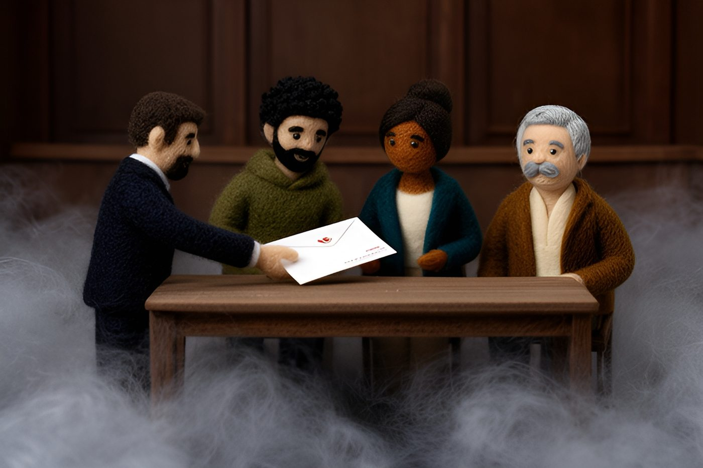
Exits- Expanding to a new market
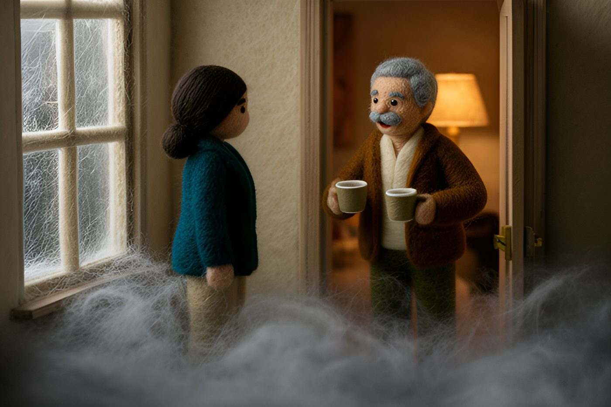
Clarity, a year later
The lines cross
In week 52 Salma redrew Hisham's 2 lines on the same whiteboard. The early-payment fees had changed everything. Monthly revenue: $21,000. Monthly costs: $19,500. For the first time the lines had crossed. Daftar could keep going even if no investor ever called again. Tariq took a photo of the whiteboard. This time it was the right number.
Default alive is something you earn: revenue that covers costs, so the company decides its future, not the next round.
Paul Graham, Default Alive or Default Dead? (2015)An offer
A big regional company called. They wanted to buy Daftar. The number was more money than Salma had ever imagined, and less than she now believed the company could become. Hisham told them how his own sale had gone: the price, the 3 years he had to stay, the team he lost. “Selling is a fine ending,” he said. “Just make sure it's the ending you chose.” They said not now, and kept the door open.
Selling a company is a real ending, with its own terms, timelines and people. Know what you want before the offer arrives.
Public reporting on Uber's acquisition of Careem (2019)Riyadh?
Layla thought the next step was Riyadh. More shops, bigger orders, and wholesalers who already knew Omar. Salma was tempted. But Riyadh meant a different regulator, different payment habits, and a team that knew nobody there. They made a slower plan: one partner wholesaler first, a licence application, and Salma spending 1 week a month there, drinking tea in shops at 7 in the morning, again.
A new country is a new company in many ways: new rules, new payment habits, new relationships. Start with one partner and learn before you scale.
Common practice in the regionThe fog, a year later
On the last evening of the year Salma stood at the window of the small office. The street outside was foggy again. It always would be. But she knew her runway to the week, she slept 7 hours, she told her team the truth, and she wrote every number down. Hisham came in with 2 coffees. “Next year will be harder,” he said. “Good,” said Salma. “I can see a little further now.”
The fog never fully lifts. Founders who last learn to work in it: numbers written down, sleep protected, people told the truth.
Your year
1. Three things that lifted the fog for us this year
2. One number we will check every single week
3. What we will do differently next year
Salma has 12 months of savings, a co-founder, a mentor and a problem worth solving. What she does not have is a clear view. A story about the first year of a company, the fog every founder works in, and the ideas that help it lift.
Play the game free
adam.ahmedhaz.com/founder-fog
English and Arabic · No account